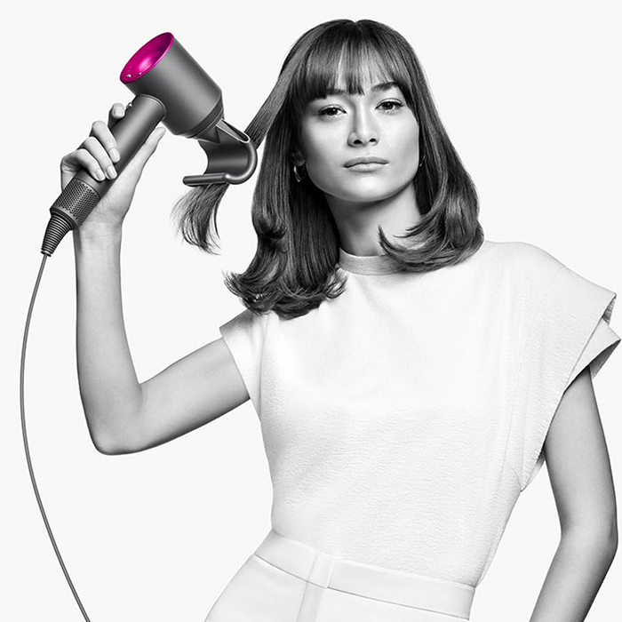

Уникальные технологии для ухода за волосами
Идеальная укладка для всех типов волос вместе с Dyson


Мнение экспертов о технике Dyson
Сегодня многие стилисты и салоны красоты в своей работе используют технику от Dyson.
Несмотря на высокую стоимость, техника Dyson помогает экономить. Мастера тратят меньше времени
на
сушку и укладку волос, благодаря чему успевают обслужить большее количество клиентов. Также
устройства от Dyson потребляют значительно меньше электроэнергии, не теряя свою мощность.
Фены Dyson универсальны. Они подходят для сушки разных типов волос. Насадки из комплекта
помогают
создавать укладки на любой вкус. Функциональность девайсов впечатляет не меньше, чем их
уникальный дизайн.
Ведущие стилисты отмечают, что техника Dyson для ухода за волосами идеально подходят для
длительной
работы за счет своей эргономичности. А за счет бесшумности инновационного мотора использование
устройств стало максимально комфортным.
